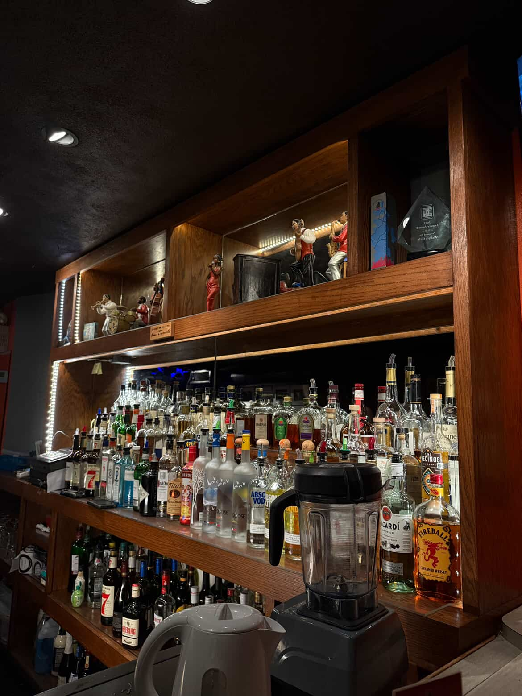
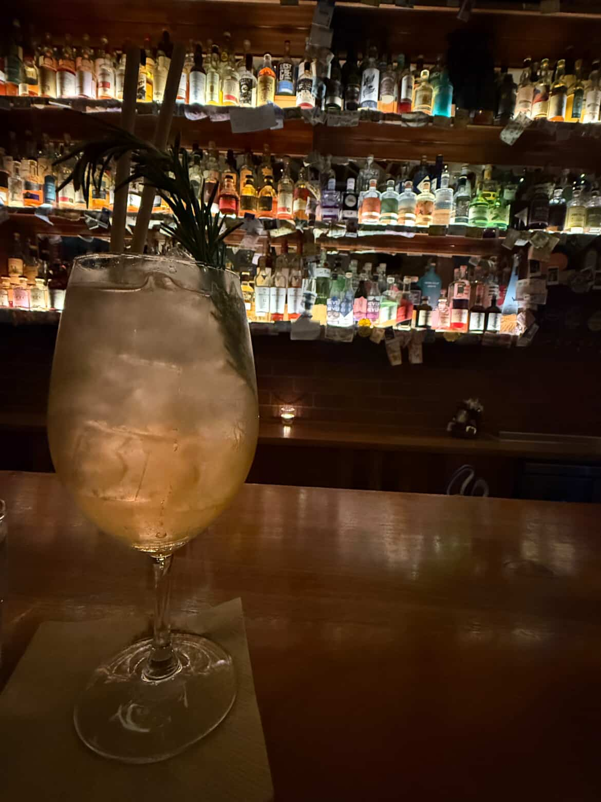
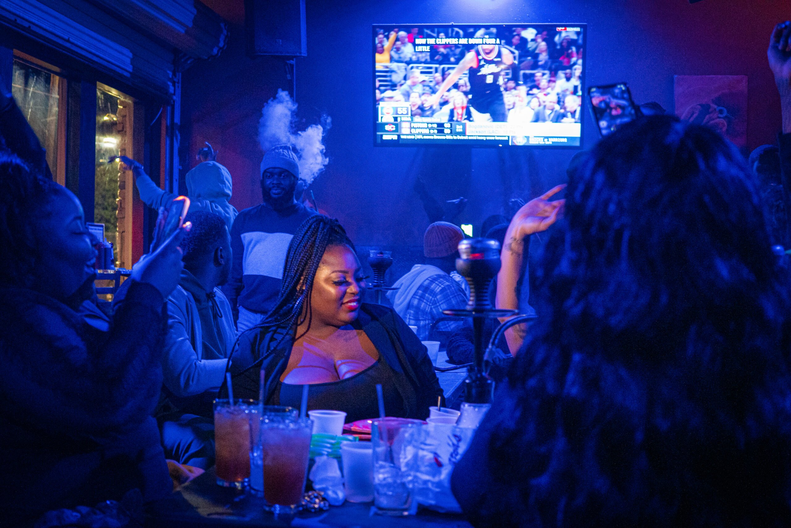
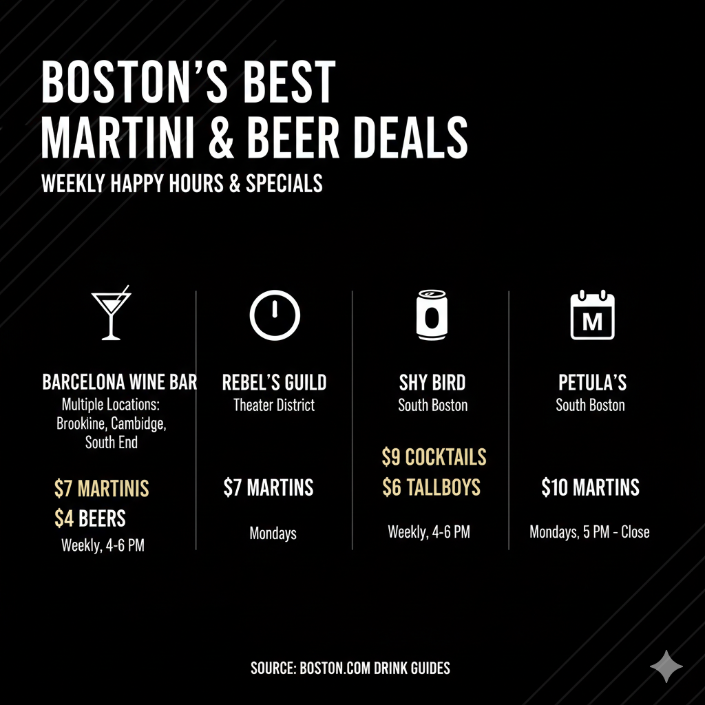

Boston's nightlife is grappling with a perfect storm of red tape and high costs, from $200,000 liquor licenses to a decades-old happy hour ban. As young residents and students seek more affordable options, the city's social scene struggles to keep pace with rival hubs like New York.
Let’s face it—Boston’s nightlife scene is bleak. With the combination of the infamous happy hour ban, high drink prices, unreliable public transit, and the suspension of alcohol sales after 2 a.m., there aren’t enough opportunities to enjoy bustling nightlife in the city. Plus, obtaining a liquor license is not an easy or affordable task, sometimes costing upwards of $600,000.
Compared to other major U.S. cities like New York, Boston’s nightlife substantially lacks, and it is a tough reality, especially for newcomers in the college-student-dominated area.

Behind the bar: Ready for a night's work.

The finished product: An expensive Boston cocktail.
Young people are seemingly unenthused by the nightlife the city has to offer.
"Honestly, I don't enjoy a night out in Boston,” said 21 year old Zoë Clayton, a senior at Suffolk University. “At the surface it seems like there is so much to do, but when you're in it, the vibe is awful. The cover charges, drink prices, uber prices, and long wait times puts a damper on my excitement.”
A “puritanical” policy in Massachusetts limits the number of alcohol licenses in Boston to about 1,200, resulting in expensive sales of scarce permits. In most U.S. cities, this restriction is unheard of. Often, licenses must be purchased from another business at a price set by that business.
Boston Liquor License Issuance Trends
Licensing peaked in 2013 and 2014, with over 2,400 licenses issued in those years combined. Issuances dropped substantially after 2015, averaging under 200 per year since 2020, possibly reflecting licensing stabilization or new review processes.
“Boston is on a quota system, so theres a limited amount of alcoholic beverage licenses,” says Adam Barnosky, a shareholder at the firm and Chair of the Restaurant & Hospitality Practice Group in Massachusetts. “So, as the population has increased, and as tourism has increased, the licenses has stayed very much stagnant.”
Due to the quota there is now a commodity market for licenses. Because of the scarcity of licenses, and given that you can’t just go to the city and get one, one of the few options is to buy a license from an existing license holder. This is why we see beer and wine licenses going for anywhere between $150,000 to $200,000.
There have been an aggregation of licenses in places that were not developed ten or fifteen years ago. Many of those licenses came from the neighborhoods of Boston, such as Jamaica Plain, Dorchester, Roslindale, and Mattapan.
Geographic Distribution of Licenses in Boston
In Boston, the vast majority of liquor licenses cluster tightly in the central core, especially the Financial District, North End, and Back Bay; this leaves outer residential neighborhoods like Roxbury and Dorchester with a distinctly scattered and sparse distribution.
“This has created a dearth of licenses in those communities, meaning there's less access to business and less availability of licenses” says Barnosky.
It appears that the hassle to get a liquor license has caused a hurdle in the economic development of Boston’s nightlife. But it looks like Boston might be on the right track, and Barnosky agrees.
“I think that’s one of the first steps, is to give underserved portions of the community more access to the licenses.”
Last year, the state rolled out 225 new licenses. The vast majority were non-transferable, non-value licenses, specifically allocated for those communities. Businesses can apply for and get a license to use and the license does not create value.
Additionally there is currently a new measure that allows businesses with a beer and wine license to convert that to an all alcoholic beverage license. Which allows people who bought into the system at a lower amount an opportunity to convert their license into one with a more significant use. Allowing them to attract different clientele.
Boston’s liquor license policy evolution
Historical Timeline
1920s–1930s
1930s–2014
2014–2023
Scroll down to see the historical timeline!
Prohibition & Control
After nationwide Prohibition ended in 1933, Massachusetts and Boston established a highly regulated liquor license system, enforcing strict state control and a citywide quota on licenses to manage public order and alcohol sales.
Cap & Market Era
Since the 1930s, Boston’s total number of liquor licenses was capped by state law. These licenses could be freely bought and sold, often reaching very high prices—sometimes over $400,000—making entry difficult for small businesses and underprivileged neighborhoods.
Community Licenses Introduced
In 2014, the state created 75 additional licenses, mostly “restricted” (non-transferable) and assigned to specific underserved neighborhoods to address historic inequities. These helped lower barriers for new, local, and minority-owned businesses to open in areas like Dorchester, Roxbury, and Mattapan.
Expansion & Upgrading (2024–present)
Starting in 2024, Massachusetts authorized 225 new licenses, most of which are non-transferable and tied to particular communities. Policy adjustments also allow some beer and wine licenses to be upgraded to full alcohol permits, increasing opportunities for small and existing businesses in diverse neighborhoods.
Considering the difficulties in getting liquor licenses, it's no surprise that drinks on a night out in the city can really add up. Furthermore, the state's happy hour ban surely doesn’t seem to provide any incentive on a planned night out.
These happy hour restrictions came in 1984, as Massachusetts saw to alleviate fatal drunk driving incidents.
In September 1983, 20 year old Kathleen Barry was killed in a drunk driving incident after her friends decided to take a joy ride following their win during a bar trivia night in Braintree. After the incident, in 1984, the state adopted the “Happy Hour regulation,” which placed several restrictions on bars and restaurants. It bans price cuts that last less than seven consecutive days, any “two for one” drink specials, games that award alcohol as prizes, and selling discounted alcoholic beverages for a certain period of time.
Ultimately, it looks like the complicated licensing market and the ban have shaped the current nightlife landscape in Boston today. When thinking about how Boston’s nightlife stands against its competitors such as New York and Chicago, it seems as if we really fall short.
Most Expensive Cities for Happy Hour in the U.S.
Accoridng to SimpleTexting's data survey, with cocktails ringing in at $17 a pop and the average appetizer selling for $13.31, it’s no shocker that NYC ranks at the top of our list with a whopping happy hour cost of $50.38.
The nightlife in other major cities like New York City is thriving and evolving. New York offers a more diverse late-night scene, including 24/7 options and more reliable public transit, running at later times.
Since 2020, the number of nightlife establishments in New York has grown by 16 percent. Plus, obtaining a liquor license is a lot easier and less costly, with licenses typically costing between $4,300 to $10,000.
When seeing the realities of a lively nightlife scene in neighboring cities, it feels like young Bostonians are seriously missing out on something.
Well, could happy hour be what Boston is missing? For some consumers, they think so.
“A lot of us are college students who don’t want to break the bank in an effort to hang out with friends after a long week. My wallet definitely cries after a single night out,” laughed Clayton. “A chance to save some money while having fun would definitely get me out of the house more.”
Not only could it soften the blow to young people's wallets, but it could show a financial benefit to businesses as well.
Image: The high cost of entry makes a vibrant neighborhood nightlife difficult to establish.
The hours of 5-7 pm are proven to be significant revenue generators and foot-traffic drivers, with restaurants earning around 60% of their average weekly sales from the surge in traffic during these post-work hours.
While a true happy hour is not possible to find in a Bostonian business, there are some restaurants and bars that have headed the call for happy hour like deals in the city.
Barcelona Wine Bar – with multiple locations in Brookline, Cambridge and South End – offers $7 martinis and $4 beers from 4 to 6 pm weekly.
Rebel’s Guild in the Theater District offers $7 martinis on Mondays.
South Boston’s Shy Bird offers $9 cocktails and $6 tallboys from 4-6 pm weekly.
Every Monday you can order $10 martinis at Petula’s in South Boston from 5pm to close.
All these deals provide an incentive for young students to hit the town for a night with only a few bucks to spare. A nice change from the upwards of $100 expected to be spent on a single night socializing in the city.
“Petula’s was great. It felt so nice to go home knowing that I didn’t just spend a bunch of money I didn’t really have,” said Clayton. “I’ll have to check other businesses out and bring some friends with me.”
Despite the appeal of a happy hour in the city, the foundation for real cultural, social, and economic change to our nightlife might lie at the legislative level.
When asked where he sees the Boston nightlife going within the next 5 years, Barnosky seems hopeful, yet emphasizes that there is still work to be done.
“A more streamlined approach to some of the municipal approvals that are required [would be helpful]. More permissive licensure, more flexible licensure, and continuing on the business friendly economic trajectory that Boston is already on.”
For a city that is home to so many young people with an itch to find their place in the large social scene, Boston better show up soon.
“Every city has its faults,” said Clayton. “I love Boston. I call it home, and no home is perfect. But if anything can make it even a little better, it's always worth a shot.”